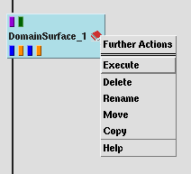
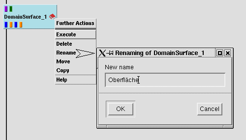

module information (function and parameters / input data / output data) in a 'book with 3 pages', the Module Information window by
| clicking on the red book icon of the module with the left mouse button |
module operations, called Further Actions by
| clicking on the module icon (anywhere) with the right mouse button to get a selection window |
| selecting the operation with the left mouse button |
|  |
These operations are
Notes:
Same function available from
|
| Map must have been executed completely before, using |
|  |